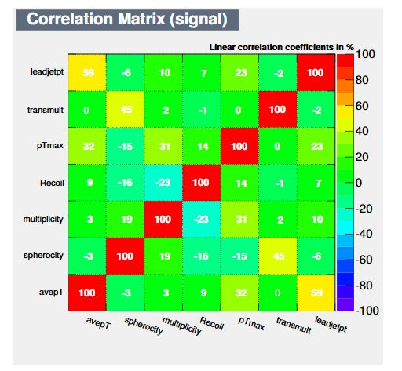
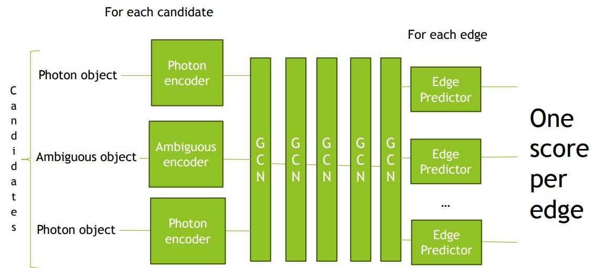
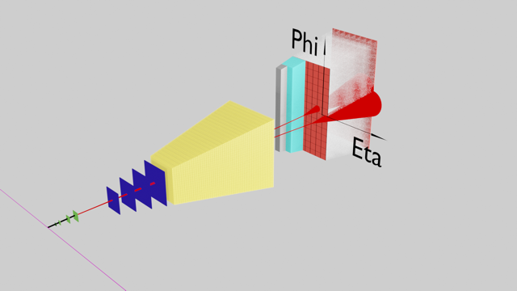
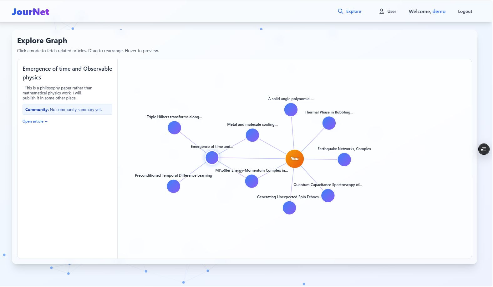
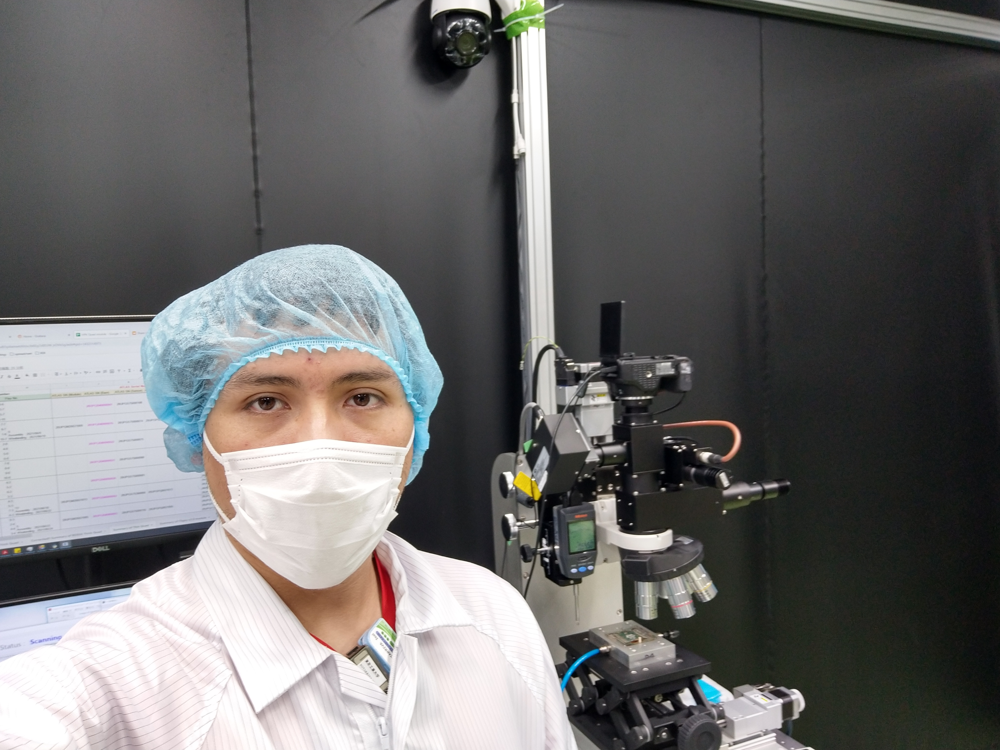

<link rel="stylesheet" href="styles.css">
<main class="container">
    <div class="content">
        <h1 style="font-size: 2rem; margin: 0; color: #333;" data-i18n="name">Isai Roberto Sotarriva Alvarez</h1>
        <p style="font-size: 1.2rem; margin: 5px 0; color: #555;" data-i18n="job_title">Physics Ph.D. | Machine Learning
            Engineer | Expertise in Statistical Analysis & Data Science</p>
        <p style="font-size: 1rem; margin: 10px 0; color: #444;" data-i18n="summary">I work on data analysis and machine
            learning in the context of large-scale particle physics experiments. My background is in experimental
            high-energy physics, with experience spanning simulation, detector operations, scientific software
            development, and applied machine learning. Much of my work focuses on extracting reliable information from
            complex and imperfect data.</p>
        <style>
            /* Responsive grid replacing floating/absolute bubbles.
               Cards auto-fit into 1 or 2 columns depending on container width. */
            .bubble-timeline {
                display: grid;
                grid-template-columns: repeat(auto-fit, minmax(300px, 1fr));
                gap: 18px;
                margin: 8px 0;
                align-items: start;
            }

            .bubble {
                position: relative;
                width: 100%;
                border: 1px solid #e6e6e6;
                border-radius: 10px;
                overflow: hidden;
                box-shadow: 0 6px 18px rgba(0, 0, 0, 0.06);
                background: #fff;
                display: flex;
                flex-direction: column;
                transition: transform .18s ease, box-shadow .18s ease;
                cursor: default;
            }

            .bubble:hover {
                transform: translateY(-6px);
                box-shadow: 0 12px 28px rgba(0, 0, 0, 0.12);
            }

            .bubble img {
                width: 100%;
                height: 160px;
                object-fit: cover;
                display: block;
            }

            .bubble .tray {
                position: relative;
                padding: 14px;
                background: transparent;
                width: 100%;
                opacity: 1;
            }

            .bubble .tray h3 {
                margin: 0 0 8px 0;
                font-size: 1.05rem;
                color: #111;
            }

            .bubble .tray p {
                margin: 0;
                font-size: 0.95rem;
                color: #444;
                line-height: 1.4;
            }

            @media (max-width: 480px) {
                .bubble img {
                    height: 140px;
                }

                .bubble .tray {
                    padding: 12px;
                }
            }
        </style>

        <div class="bubble-timeline" id="bubbleTimeline">
            <!-- Each bubble uses only the first image from original sections and includes i18n keys -->
            <div class="bubble" data-title-key="hero_title" data-desc-key="hero_subtitle"
                data-img="assets/femtoscopy.jpg">
                
                <div class="tray">
                    <h3 data-i18n="hero_title">Early Work: Simulation and Statistical Analysis</h3>
                    <p data-i18n="hero_subtitle">During my bachelor’s degree, I worked on Monte Carlo simulations using
                        Pythia and presented results at the ALICE Mexico conference.</p>
                </div>
            </div>

            <div class="bubble" data-title-key="bachelor_thesis" data-desc-key="bachelor_thesis_description"
                data-img="assets/covarianceMatrix.jpg">
                
                <div class="tray">
                    <h3 data-i18n="bachelor_thesis">Bachelor’s Thesis: First Use of Machine Learning</h3>
                    <p data-i18n="bachelor_thesis_description">For my bachelor’s thesis, I used machine learning
                        techniques within the ROOT TMVA framework. The work focused on feature ranking, feature
                        decorrelation, covariance analysis, and systematic comparison of multiple classifiers, including
                        linear discriminants, support vector machines, neural networks, and boosted decision trees.
                        Model performance was evaluated using statistical significance, which was used to define the
                        final working point.</p>
                </div>
            </div>

            <div class="bubble" data-title-key="master_thesis" data-desc-key="master_thesis_description"
                data-img="assets/IMG_20210709_153623076.jpg">
                
                <div class="tray">
                    <h3 data-i18n="master_thesis">Master’s Work: Detector Quality Control and Image Processing</h3>
                    <p data-i18n="master_thesis_description">During my master’s studies in Japan, I worked on quality
                        control for semiconductor pixel detector modules. This involved image processing tasks such as
                        high-performance image stitching and visual inspection of wire bonding. I focused on traditional
                        computer vision approaches rather than machine learning in order to improve stability,
                        interpretability, and controllability in a production environment.</p>
                </div>
            </div>

            <div class="bubble" data-title-key="qualification_task" data-desc-key="qualification_task_description"
                data-img="assets/atlas.jpg">
                
                <div class="tray">
                    <h3 data-i18n="qualification_task">ATLAS Qualification Task: Scientific Software Development</h3>
                    <p data-i18n="qualification_task_description">As part of my ATLAS qualification task, I worked on
                        detector alignment using the ATHENA software framework. This required a detailed understanding
                        of the reconstruction software and adherence to a strict development workflow, including code
                        style requirements, detailed reviews, and iterative revisions before merge approval. This
                        experience provided strong exposure to large, long-lived scientific codebases.</p>
                </div>
            </div>

            <div class="bubble" data-title-key="phd_thesis_constraints"
                data-desc-key="phd_thesis_constraints_description" data-img="assets/gcn.jpg">
                
                <div class="tray">
                    <h3 data-i18n="phd_thesis_constraints">Ph.D. Research: Machine Learning Under Experimental
                        Constraints</h3>
                    <p data-i18n="phd_thesis_constraints_description">At the beginning of my Ph.D., I explored graph
                        neural network approaches to improve the discrimination between diphoton signal events and
                        background from misidentified electrons. This work highlighted practical limitations related to
                        simulation accuracy, domain shift between Monte Carlo and data, and the constraints imposed by
                        analysis approval procedures in large collaborations.</p>
                </div>
            </div>

            <div class="bubble" data-title-key="phd_thesis_2" data-desc-key="phd_thesis_2_description"
                data-img="assets/3DYCearly.png">
                
                <div class="tray">
                    <h3 data-i18n="phd_thesis_2">Current Ph.D. Work: Probabilistic Background Modeling</h3>
                    <p data-i18n="phd_thesis_2_description">My current thesis work focuses on modeling the Z→ee
                        background in diphoton analyses. The problem can be formulated as an optimal transport task for
                        the invariant mass distribution, combined with a probabilistic model for event yields. Each
                        particle misidentification is treated as an independent stochastic process, allowing both shape
                        and normalization effects to be modeled consistently.</p>
                </div>
            </div>

            <div class="bubble" data-title-key="local_llm_rag" data-desc-key="local_llm_rag_description"
                data-img="assets/RAG.jpg">
                
                <div class="tray">
                    <h3 data-i18n="local_llm_rag">Local LLM + RAG</h3>
                    <p data-i18n="local_llm_rag_description">Early exploration of retrieval-augmented generation using
                        local inference and vector search.</p>
                </div>
            </div>

            <div class="bubble" data-title-key="paper_recommendation_system"
                data-desc-key="paper_recommendation_system_description" data-img="assets/Journet.jpg">
                
                <div class="tray">
                    <h3 data-i18n="paper_recommendation_system">Paper Recommendation System</h3>
                    <p data-i18n="paper_recommendation_system_description">Vector-based recommendation with user
                        feedback and an interactive graph UI.</p>
                </div>
            </div>

            <div class="bubble" data-title-key="closing_statement" data-desc-key=""
                data-img="assets/IMG_20220422_181038129_HDR.jpg">
                
                <div class="tray">
                    <h3 data-i18n="closing_statement">Closing</h3>
                    <p data-i18n="closing_statement">I am interested in roles where machine learning meets scientific
                        rigor, system constraints, and real-world impact.</p>
                </div>
            </div>
        </div>

        <script>
            (function () {
                if (window.__bubbleFadeInInitialized) return;
                window.__bubbleFadeInInitialized = true;
                // Subtle fade-in on scroll (scoped)
                const sections = document.querySelectorAll('.story-section');
                if (!sections.length) return;
                const observer = new IntersectionObserver(entries => {
                    entries.forEach(entry => {
                        if (entry.isIntersecting) {
                            entry.target.classList.add('visible');
                        }
                    });
                }, { threshold: 0.15 });
                sections.forEach(section => observer.observe(section));
            })();
        </script>
    </div>
    <div class="quickActions" style="display: flex; flex-direction: column; gap: 10px; margin-top: 10px;">
        <!-- Research -->
        <a href="https://scholar.google.com/citations?user=cljeSm4AAAAJ&hl=en" target="_blank" title="Google Scholar"
            style="display: flex; align-items: center; text-decoration: none; gap: 10px;">
            
            <span style="color: #333; font-size: 1rem;">Isaí Roberto Sotarriva Álvarez</span>
        </a>
        <a href="https://orcid.org/0009-0001-8347-0803" target="_blank" title="ORCID"
            style="display: flex; align-items: center; text-decoration: none; gap: 10px;">
            
            <span style="color: #333; font-size: 1rem;">0009-0001-8347-0803 </span>
        </a>
        <!-- Code -->
        <a href="https://github.com/irsotarriva" target="_blank" title="GitHub"
            style="display: flex; align-items: center; text-decoration: none; gap: 10px;">
            
            <span style="color: #333; font-size: 1rem;">irsotarriva</span>
        </a>
        <a href="https://www.kaggle.com/irsotarriva" target="_blank" title="Kaggle"
            style="display: flex; align-items: center; text-decoration: none; gap: 10px;">
            
            <span style="color: #333; font-size: 1rem;">irsotarriva</span>
        </a>
        <!-- General Info -->
        <a href="https://www.linkedin.com/in/irsotarriva/" target="_blank" title="LinkedIn"
            style="display: flex; align-items: center; text-decoration: none; gap: 10px;">
            
            <span style="color: #333; font-size: 1rem;">irsotarriva</span>
        </a>
        <a href="mailto:irsotarriva@gmail.com" title="Email"
            style="display: flex; align-items: center; text-decoration: none; gap: 10px;">
            
            <span style="color: #333; font-size: 1rem;">irsotarriva@gmail.com</span>
        </a>
        <a href="tel:+818025963157" title="Phone"
            style="display: flex; align-items: center; text-decoration: none; gap: 10px;">
            
            <span style="color: #333; font-size: 1rem;">+81 80-2596-3157</span>
        </a>
    </div>
    <script src="script.js"></script>
    <script>
        // Add the translations for this page
        registerTranslations({
            en: {
                name: "Isai Roberto Sotarriva Alvarez",
                job_title: "Physics Ph.D. | Machine Learning Engineer | Expertise in Statistical Analysis & Data Science",
                summary: "I am a dedicated Physics Ph.D. candidate with expertise in machine learning, data science, and advanced statistical analysis. During my time in Mexico I worked as part of ALICE Mexico on Machine learning and data analysis for event identification. I have since moved to Japan where I have been working as part of the ATLAS collaboration, during my master's I developed a computer vision algorithm for quality control on the new semiconductor detectors. On my Ph. D. I am working on a GNN/RNN method for background removal for the electron and jet backgrounds on the diphoton analysis. I am currently also working as a teaching assistance at Tokyo Institute of Technology. I am passionate about applying computational and analytical skills to solve complex problems, I am seeking roles in machine learning engineering or postdoctoral research in physics.",
                what_i_ship: "Personal Projects: Public Software and ML Systems",
                hero_title: "Early Work: Simulation and Statistical Analysis",
                hero_subtitle: "During my bachelor’s degree, I worked on Monte Carlo simulations using Pythia and presented results at the ALICE Mexico conference.",
                bachelor_thesis: "Bachelor’s Thesis: First Use of Machine Learning",
                bachelor_thesis_description: "For my bachelor’s thesis, I used machine learning techniques within the ROOT TMVA framework. The work focused on feature ranking, feature decorrelation, covariance analysis, and systematic comparison of multiple classifiers, including linear discriminants, support vector machines, neural networks, and boosted decision trees. Model performance was evaluated using statistical significance, which was used to define the final working point.",
                master_thesis: "Master’s Work: Detector Quality Control and Image Processing",
                master_thesis_description: "During my master’s studies in Japan, I worked on quality control for semiconductor pixel detector modules. This involved image processing tasks such as high-performance image stitching and visual inspection of wire bonding. I focused on traditional computer vision approaches rather than machine learning in order to improve stability, interpretability, and controllability in a production environment.",
                qualification_task: "ATLAS Qualification Task: Scientific Software Development",
                qualification_task_description: "As part of my ATLAS qualification task, I worked on detector alignment using the ATHENA software framework. This required a detailed understanding of the reconstruction software and adherence to a strict development workflow, including code style requirements, detailed reviews, and iterative revisions before merge approval. This experience provided strong exposure to large, long-lived scientific codebases.",
                phd_thesis_constraints: "Ph.D. Research: Machine Learning Under Experimental Constraints",
                phd_thesis_constraints_description: "At the beginning of my Ph.D., I explored graph neural network approaches to improve the discrimination between diphoton signal events and background from misidentified electrons. This work highlighted practical limitations related to simulation accuracy, domain shift between Monte Carlo and data, and the constraints imposed by analysis approval procedures in large collaborations.",
                phd_thesis_2: "Current Ph.D. Work: Probabilistic Background Modeling",
                phd_thesis_2_description: "My current thesis work focuses on modeling the Z→ee background in diphoton analyses. The problem can be formulated as an optimal transport task for the invariant mass distribution, combined with a probabilistic model for event yields. Each particle misidentification is treated as an independent stochastic process, allowing both shape and normalization effects to be modeled consistently.",
                local_llm_rag: "Local LLM + RAG",
                local_llm_rag_description: "Early exploration of retrieval-augmented generation using local inference and vector search.",
                paper_recommendation_system: "Paper Recommendation System",
                paper_recommendation_system_description: "Vector-based recommendation with user feedback and an interactive graph UI.",
                closing_statement: "Closing",
                closing_statement_description: "I am interested in roles where machine learning meets scientific rigor, system constraints, and real-world impact."
            },
            es: {
                name: "Isaí Roberto Sotarriva Álvarez",
                job_title: "Doctorado en Física | Ingeniero de Aprendizaje Automático | Experto en Análisis Estadístico y Ciencia de Datos",
                summary: "Soy un candidato a doctorado en física dedicado con experiencia en aprendizaje automático, ciencia de datos y análisis estadístico avanzado. Durante mi tiempo en México trabajé como parte de ALICE México en aprendizaje automático y análisis de datos para la identificación de eventos. Desde entonces me he mudado a Japón, donde he estado trabajando como parte de la colaboración ATLAS. Durante mi maestría desarrollé un algoritmo de visión por computadora para el control de calidad en los nuevos detectores semiconductores. En mi doctorado estoy trabajando en un método GNN/RNN para la eliminación de fondo en el análisis diphotónico. Actualmente también trabajo como asistente de enseñanza en el Instituto Tecnológico de Tokio. Me apasiona aplicar habilidades computacionales y analíticas para resolver problemas complejos, y busco roles en ingeniería de aprendizaje automático o investigación postdoctoral en física.",
                what_i_ship: "Proyectos Personales: Software Público y Sistemas de ML",
                hero_title: "Trabajo Temprano: Simulación y Análisis Estadístico",
                hero_subtitle: "Durante mi licenciatura, trabajé en simulaciones de Monte Carlo usando Pythia y presenté resultados en la conferencia ALICE México.",
                bachelor_thesis: "Tesis de Licenciatura: Primer Uso de Aprendizaje Automático",
                bachelor_thesis_description: "Para mi tesis de licenciatura, utilicé técnicas de aprendizaje automático dentro del marco ROOT TMVA. El trabajo se centró en la clasificación de características, la decorrelación de características, el análisis de covarianza y la comparación sistemática de múltiples clasificadores, incluidos discriminantes lineales, máquinas de vectores de soporte, redes neuronales y árboles de decisión potenciados. El rendimiento del modelo se evaluó utilizando la significancia estadística, que se utilizó para definir el punto de trabajo final.",
                master_thesis: "Trabajo de Maestría: Control de Calidad del Detector y Procesamiento de Imágenes",
                master_thesis_description: "Durante mis estudios de maestría en Japón, trabajé en el control de calidad de los módulos de detectores de píxeles semiconductores. Esto involucró tareas de procesamiento de imágenes como la unión de imágenes de alto rendimiento e inspección visual de conexiones por cable. Me centré en enfoques tradicionales de visión por computadora en lugar de aprendizaje automático para mejorar la estabilidad, interpretabilidad y controlabilidad en un entorno de producción.",
                qualification_task: "Tarea de Calificación de ATLAS: Desarrollo de Software Científico",
                qualification_task_description: "Como parte de mi tarea de calificación de ATLAS, trabajé en la alineación del detector utilizando el marco de software ATHENA. Esto requirió una comprensión detallada del software de reconstrucción y la adhesión a un flujo de trabajo de desarrollo estricto, que incluye requisitos de estilo de código, revisiones detalladas y revisiones iterativas antes de la aprobación de la fusión. Esta experiencia proporcionó una fuerte exposición a bases de código científicas grandes y duraderas.",
                phd_thesis_constraints: "Investigación de Doctorado: Aprendizaje Automático Bajo Restricciones Experimentales",
                phd_thesis_constraints_description: "Al comienzo de mi doctorado, exploré enfoques de redes neuronales gráficas para mejorar la discriminación entre eventos de señal diphotónica y el fondo de electrones mal identificados. Este trabajo destacó las limitaciones prácticas relacionadas con la precisión de la simulación, el cambio de dominio entre Monte Carlo y los datos, y las restricciones impuestas por los procedimientos de aprobación de análisis en grandes colaboraciones.",
                phd_thesis_2: "Trabajo Actual de Doctorado: Modelado Probabilístico de background",
                phd_thesis_2_description: "Mi trabajo actual de tesis se centra en modelar el fondo Z→ee en análisis diphotónicos. El problema se puede formular como una tarea de transporte óptimo para la distribución de masa invariante, combinada con un modelo probabilístico para los rendimientos de eventos. Cada mala identificación de partículas se trata como un proceso estocástico independiente, lo que permite modelar de manera consistente tanto los efectos de forma como de normalización.",
                local_llm_rag: "LLM Local + RAG",
                local_llm_rag_description: "Exploración temprana de generación aumentada por recuperación utilizando inferencia local y búsqueda vectorial.",
                paper_recommendation_system: "Sistema de Recomendación de Artículos",
                paper_recommendation_system_description: "Recomendación basada en vectores con retroalimentación del usuario y una interfaz gráfica interactiva.",
                closing_statement: "Conclusion",
            },
            ja: {
                name: "イサイ・ロベルト・ソタリバ・アルバレス",
                job_title: "物理学博士候補 | 機械学習エンジニア | 統計分析とデータサイエンスの専門家",
                summary: "私は、機械学習、データサイエンス、先進的な統計分析に精通した献身的な物理学博士候補者です。メキシコにいた頃、ALICEメキシコの一員として、イベント識別のための機械学習とデータ分析に取り組みました。その後、日本に移り、ATLASコラボレーションの一員として活動しています。修士課程では、新しい半導体検出器の品質管理のためのコンピュータビジョンアルゴリズムを開発しました。博士課程では、二重光子解析における背景除去のためのGNN/RNN手法に取り組んでいます。現在、東京工業大学でティーチングアシスタントとしても働いています。複雑な問題を解決するために計算および分析スキルを適用することに情熱を持っており、機械学習エンジニアリングまたは物理学のポスドク研究の役割を求めています。",
                what_i_ship: "個人プロジェクト：公開ソフトウェアとMLシステム",
                hero_title: "初期の仕事：シミュレーションと統計分析",
                hero_subtitle: "学士号取得中に、Pythiaを使用したモンテカルロシミュレーションに取り組み、ALICEメキシコ会議で結果を発表しました。",
                bachelor_thesis: "学士論文：機械学習の初使用",
                bachelor_thesis_description: "学士論文では、ROOT TMVAフレームワーク内で機械学習技術を使用しました。この作業は、特徴ランキング、特徴の非相関化、共分散分析、および線形識別子、サポートベクターマシン、ニューラルネットワーク、ブースト決定木など、複数の分類器の体系的な比較に焦点を当てました。モデルのパフォーマンスは統計的有意性を使用して評価され、最終的な作業ポイントを定義するために使用されました。",
                master_thesis: "修士の仕事：検出器の品質管理と画像処理",
                master_thesis_description: "日本での修士課程では、半導体ピクセル検出器モジュールの品質管理に取り組みました。これには、高性能な画像スティッチングやワイヤーボンディングの視覚的検査などの画像処理タスクが含まれていました。生産環境での安定性、解釈可能性、制御可能性を向上させるために、機械学習ではなく従来のコンピュータビジョンアプローチに焦点を当てました。",
                qualification_task: "ATLAS資格タスク：科学ソフトウェア開発",
                qualification_task_description: "ATLAS資格タスクの一環として、ATHENAソフトウェアフレームワークを使用した検出器の整列に取り組みました。これには、再構築ソフトウェアの詳細な理解と、コードスタイル要件、詳細なレビュー、マージ承認前の反復的な修正など、厳格な開発ワークフローの順守が必要でした。この経験は、大規模で長寿命の科学コードベースへの強力な露出を提供しました。",
                phd_thesis_constraints: "博士研究：実験的制約下での機械学習",
                phd_thesis_constraints_description: "博士課程の初めに、二重光子信号イベントと誤認識された電子からの背景との識別を改善するために、グラフニューラルネットワークアプローチを探求しました。この作業は、シミュレーションの精度、モンテカルロとデータ間のドメインシフト、および大規模なコラボレーションにおける分析承認手順によって課せられた制約に関連する実際的な制限を浮き彫りにしました。",
                phd_thesis_2: "現在の博士課程の仕事：確率的背景モデリング",
                phd_thesis_2_description: "私の現在の論文の仕事は、二重光子解析におけるZ→ee背景のモデリングに焦点を当てています。この問題は、イベント収率の確率モデルと組み合わせた、不変質量分布の最適輸送タスクとして定式化できます。各粒子の誤認識は独立した確率過程として扱われ、形状と正規化の両方の効果を一貫してモデル化できるようにします。",
                local_llm_rag: "ローカルLLM + RAG",
                local_llm_rag_description: "ローカル推論とベクトル検索を使用した検索強化生成の初期探索。",
                paper_recommendation_system: "論文推薦システム",
                paper_recommendation_system_description: "ユーザーフィードバックとインタラクティブなグラフUIを備えたベクトルベースの推薦。",
                closing_statement: "結論",
            },
            ru: {
                name: "Исаи Роберто Сотаррива Альварес",
                job_title: "Кандидат физико-математических наук | Инженер по машинному обучению | Эксперт в области статистического анализа и науки о данных",
                summary: "Я являюсь преданным своему делу кандидатом физико-математических наук с опытом работы в области машинного обучения, науки о данных и продвинутого статистического анализа. Во время моего пребывания в Мексике я работал в составе ALICE Mexico над машинным обучением и анализом данных для идентификации событий. С тех пор я переехал в Японию, где работаю в составе коллаборации ATLAS. Во время моей магистратуры я разработал алгоритм компьютерного зрения для контроля качества новых полупроводниковых детекторов. В своей диссертации я работаю над методом GNN/RNN для удаления фона в дипhotон-анализе. В настоящее время я также работаю ассистентом преподавателя в Токийском технологическом институте. Я страстно стремлюсь применять вычислительные и аналитические навыки для решения сложных проблем и ищу роли в области инженерии машинного обучения или постдокторских исследований в области физики.",
                what_i_ship: "Личные проекты: публичное программное обеспечение и системы машинного обучения",
                hero_title: "Ранняя работа: моделирование и статистический анализ",
                hero_subtitle: "Во время моей бакалаврской степени я работал над моделированием Монте-Карло с использованием Pythia и представил результаты на конференции ALICE Mexico.",
                bachelor_thesis: "Бакалаврская работа: первое использование машинного обучения",
                bachelor_thesis_description: "Для моей бакалаврской работы я использовал методы машинного обучения в рамках ROOT TMVA. Работа была сосредоточена на ранжировании признаков, декорреляции признаков, анализе ковариации и систематическом сравнении нескольких классификаторов, включая линейные дискриминанты, машины опорных векторов, нейронные сети и бустированные деревья решений. Производительность модели оценивалась с использованием статистической значимости, которая использовалась для определения конечной рабочей точки.",
                master_thesis: "Магистерская работа: контроль качества детекторов и обработка изображений",
                master_thesis_description: "Во время моего обучения в магистратуре в Японии я работал над контролем качества модулей полупроводниковых пиксельных детекторов. Это включало задачи обработки изображений, такие как высокопроизводительное сшивание изображений и визуальный осмотр проводных соединений. Я сосредоточился на традиционных подходах компьютерного зрения, а не на машинном обучении, чтобы улучшить стабильность, интерпретируемость и управляемость в производственной среде.",
                qualification_task: "Квалификационное задание ATLAS: разработка научного программного обеспечения",
                qualification_task_description: "В рамках моего квалификационного задания ATLAS я работал над выравниванием детекторов с использованием программной платформы ATHENA. Это требовало детального понимания программного обеспечения для реконструкции и соблюдения строгого рабочего процесса разработки, включая требования к стилю кода, подробные обзоры и итеративные исправления перед одобрением слияния. Этот опыт обеспечил сильное знакомство с большими, долговечными научными кодовыми базами.",
                phd_thesis_constraints: "Исследования в области докторантуры: машинное обучение с учетом экспериментальных ограничений",
                phd_thesis_constraints_description: "В начале моей докторантуры я исследовал подходы графовых нейронных сетей для улучшения дискриминации между событиями сигнала дипhoton и фоном от неправильно идентифицированных электронов. Эта работа выявила практические ограничения, связанные с точностью моделирования, смещением домена между Монте-Карло и данными, а также ограничениями, налагаемыми процедурами утверждения анализа в крупных коллаборациях.",
                phd_thesis_2: "Текущая работа в докторантуре: вероятностное моделирование фона",
                phd_thesis_2_description: "Моя текущая работа по диссертации сосредоточена на моделировании фона Z→ee в дипhoton-анализах. Проблема может быть сформулирована как задача оптимальной транспортировки для распределения инвариантной массы в сочетании с вероятностной моделью для выхода событий. Каждая неправильная идентификация частицы рассматривается как независимый стохастический процесс, что позволяет последовательно моделировать как форму, так и нормализационные эффекты.",
                local_llm_rag: "Локальный LLM + RAG",
                local_llm_rag_description: "Раннее исследование генерации с поддержкой поиска с использованием локального вывода и векторного поиска.",
                paper_recommendation_system: "Система рекомендаций статей",
                paper_recommendation_system_description: "Рекомендации на основе векторов с обратной связью от пользователей и интерактивным графическим интерфейсом.",
                closing_statement: "Заключение",
            },
            fr: {
                name: "Isaí Roberto Sotarriva Álvarez",
                job_title: "Doctorant en physique | Ingénieur en apprentissage automatique | Expertise en analyse statistique et science des données",
                summary: "Je suis un doctorant en physique dévoué, spécialisé en apprentissage automatique, science des données et analyse statistique avancée. Pendant mon séjour au Mexique, j'ai travaillé au sein d'ALICE Mexico sur l'apprentissage automatique et l'analyse de données pour l'identification des événements. Depuis, j'ai déménagé au Japon où je fais partie de la collaboration ATLAS. Lors de ma maîtrise, j'ai développé un algorithme de vision par ordinateur pour le contrôle qualité des nouveaux détecteurs semi-conducteurs. Dans ma thèse de doctorat, je travaille sur une méthode GNN/RNN pour l'élimination du bruit dans l'analyse diphoton. Je travaille également comme assistant d'enseignement à l'Institut de technologie de Tokyo. Je suis passionné par l'application de compétences computationnelles et analytiques pour résoudre des problèmes complexes, et je cherche des rôles en ingénierie de l'apprentissage automatique ou en recherche postdoctorale en physique.",
                what_i_ship: "Projets personnels : logiciels publics et systèmes ML",
                hero_title: "Travail précoce : simulation et analyse statistique",
                hero_subtitle: "Pendant ma licence, j'ai travaillé sur des simulations Monte Carlo utilisant Pythia et présenté les résultats à la conférence ALICE Mexico.",
                bachelor_thesis: "Mémoire de licence : première utilisation de l'apprentissage automatique",
                bachelor_thesis_description: "Pour mon mémoire de licence, j'ai utilisé des techniques d'apprentissage automatique dans le cadre ROOT TMVA. Le travail s'est concentré sur le classement des caractéristiques, la décorélation des caractéristiques, l'analyse de covariance et la comparaison systématique de plusieurs classificateurs, y compris les discriminants linéaires, les machines à vecteurs de support, les réseaux neuronaux et les arbres de décision boostés. La performance du modèle a été évaluée en utilisant la signification statistique, qui a été utilisée pour définir le point de fonctionnement final.",
                master_thesis: "Travail de maîtrise : contrôle qualité des détecteurs et traitement d'images",
                master_thesis_description: "Pendant mes études de maîtrise au Japon, j'ai travaillé sur le contrôle qualité des modules de détecteurs à pixels semi-conducteurs. Cela nécessitait des tâches de traitement d'images telles que l'assemblage d'images haute performance et l'inspection visuelle des connexions par fil. Je me suis concentré sur des approches traditionnelles de vision par ordinateur plutôt que sur l'apprentissage automatique afin d'améliorer la stabilité, l'interprétabilité et la contrôlabilité dans un environnement de production.",
                qualification_task: "Tâche de qualification ATLAS : développement de logiciels scientifiques",
                qualification_task_description: "Dans le cadre de ma tâche de qualification ATLAS, j'ai travaillé sur l'alignement des détecteurs en utilisant le cadre logiciel ATHENA. Cela nécessitait une compréhension détaillée du logiciel de reconstruction et le respect d'un flux de travail de développement strict, y compris les exigences de style de code, les revues détaillées et les révisions itératives avant l'approbation de la fusion. Cette expérience a permis une forte exposition à des bases de code scientifiques grandes et durables.",
                phd_thesis_constraints: "Recherche de doctorat : apprentissage automatique sous contraintes expérimentales",
                phd_thesis_constraints_description: "Au début de mon doctorat, j'ai exploré des approches de réseaux de neurones graphiques pour améliorer la discrimination entre les événements de signal diphoton et le bruit provenant d'électrons mal identifiés. Ce travail a mis en évidence des limitations pratiques liées à la précision de la simulation, au décalage de domaine entre Monte Carlo et les données, ainsi qu'aux contraintes imposées par les procédures d'approbation d'analyse dans les grandes collaborations.",
                phd_thesis_2: "Travail actuel de doctorat : modélisation probabiliste du bruit",
                phd_thesis_2_description: "Mon travail de thèse actuel se concentre sur la modélisation du bruit Z→ee dans les analyses diphoton. Le problème peut être formulé comme une tâche de transport optimal pour la distribution de masse invariante, combinée à un modèle probabiliste pour les rendements d'événements. Chaque mauvaise identification de particule est traitée comme un processus stochastique indépendant, permettant de modéliser de manière cohérente les effets de forme et de normalisation.",
                local_llm_rag: "LLM local + RAG",
                local_llm_rag_description: "Exploration précoce de la génération augmentée par récupération utilisant l'inférence locale et la recherche vectorielle.",
                paper_recommendation_system: "Système de recommandation d'articles",
                paper_recommendation_system_description: "Recommandation basée sur les vecteurs avec retour d'information utilisateur et interface graphique interactive.",
                closing_statement: "Conclusion",
            },
        });
    </script>
</main>